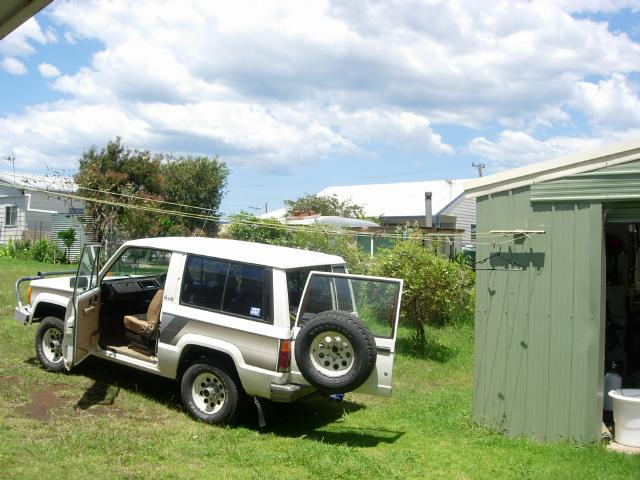
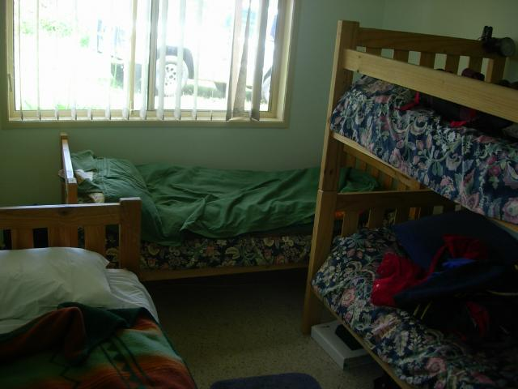
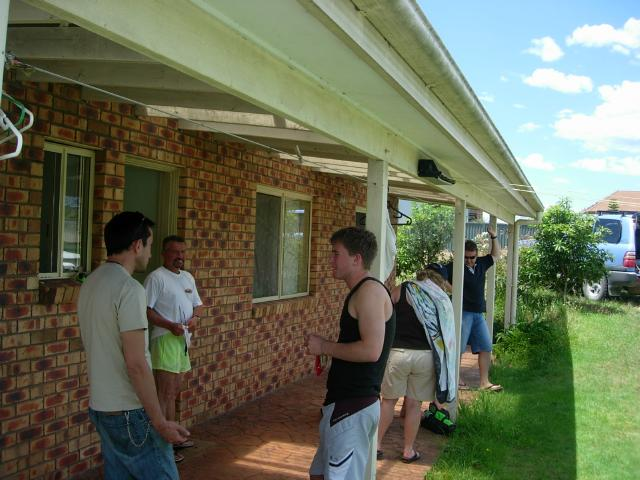

-=Scuba Dawgs=-

Enrolled in a scuba class at a local dive shop walking distance from the hotel. Owner Steven (who looks just like Tom Kopp) asked me to read two chapters before the first class. Told him I was Herminone and would have the whole book done by then. He knew what I meant.
Passed the physical and the water fitness test, though by the end of the 200-meter swim I was in marginal shape. But I did fine with the equipment and the pool exercises--mask clearing, reg recovery, weight belt removal and reattachment, etc. So last weekend we met our instructor Brucie at what I called scuba chalet--a beach house Steven has in a small town (the only business is a gas station that also sells meat pies) on the southern NSW coast.

There's no OCS (only child syndrom) at scuba chalet. It astonished me that NSW has miles of pristine coves with just a few locals hanging out--anything like that would be swamped in the US. But in NSW, more than 2-3 people per cove is a crowd. Random neighbors kept drifting through the house to say hi, borrow stuff, whatever.
The first day I did great with the buddy rescue, emergency recovery and other exercises.
On the second day after the 4th training drive of doing the march of the penguins down a long steep path with 27lb of weights, full tank and BC and snorkeling out to a dive site, it was clear to me that I didn't have the endurance to be a safe diver. After reaching the dive spot on that dive (middle of the cove), I was no good for anything else (does Cantinflas bring any pictures to mind?). So I because a scuba school dropout. (Paul Anka didn't descend from the clouds singing. But the instructor noted I was uncomfortable in the water and didn't have enough confidence. Water has never been my friend.)
Crappy swimming skills are part of the problem. I wouldn't wear myself out so soon if my form was half-decent. Fortunately Peter came to the US from Ireland on a swimming scholarship and made the Olympic trials. Will take lessons on alternate days from kickboxing. When I can swim 500m without exhausting myself, I'll complete the course. Aiming for March. (Sports every day is very Aussie. Somehow they have the time for it. They're just so much more relaxed about everything.)
Turns out I can still scuba the reef if I want--they have hand-held dives for non-certified divers. Got a flight to Cairns weekend after next.

From left to right:
Johnathan is a project manager for an Xbox games company. He has 30 people in Canberra and 30 in Boston. He graduated with a degree in experimental psych, and was snapped up. He couldn't tell me about his current project, should be on the market in a year. He says a main issue facing Xbox developers is parallel processing. When there were just 3 CPUs, one was for physics, one for graphics, and one for game play. Now that there are 9, it's hard to figure out how to use them effectively. (I suggested a grid computing approach, he didn't pick up on it.)
Brucie the instructor was a Navy man ("smartly now!"). His first wife decided to be a lesbian feminist and walked out (he things the real issue is that she was bored being a housewife.) He remarried and has a second family, while his first wife became a train wreck. His current wife is researching for a science fiction novel. He's anti-immigrant.
Kurt went to a boarding school because his Mum didn't like the Canberra school system--well, actually, it was because he never showed up at school, always finding something more interesting to do on the way. He's now an airplane mechanic. He took the course because Mum paid for it, then chickened out at the last minute.
Elaine (facing away) is an accountant. She has more than a bit of Hermione in her..the arrogance and the flounce, and she's always right, even when she led us to the wrong Thai restaraunt in Ulladulla, which is a little backwater costal town which thanks to immigration policy, has two Thai restaraunts. Dinner was an opportunity for her to see her parents for the first time in four months.
Rob worked for Elaine for 4 months now. She thought a teambuilding activity would be a good idea. Told him I felt for him doing all this struggle-type stuff in front of his boss. He changed the subject.
Not shown:
Darryl the co-instructor works for the state fisheries management agency.
Bob is an ex-cop who now is an application service provider in Canberra. He does web forms and workflow and hosting for companies in the 200-2000 people range. He'd traveled through the US and loved to discourse on cultural differences (more on this later). I mentioned tools he could be using and wasn't. He got my phone number and we'll do dinner sometime.
Pretty good for 36 hours together, eh? Some bonding definitely went down.